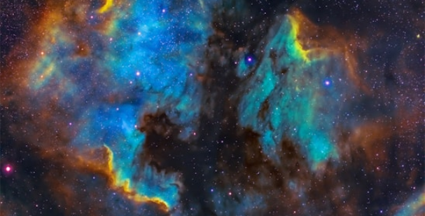

A Space Y nasceu com um objetivo audacioso: superar os limites da exploração espacial e levar a humanidade a novas fronteiras do universo. Com tecnologia de ponta e inovação disruptiva, buscamos tornar as viagens interplanetárias mais acessíveis, seguras e sustentáveis. Nosso compromisso é com foguetes reutilizáveis, propulsão avançada e comunicações interestelares que garantam o sucesso de cada missão. Acreditamos que o espaço não é o limite – é apenas o começo.
üåå Missão: Expandir o horizonte humano atrav√©s da pesquisa e do desenvolvimento de tecnologias espaciais inovadoras.üöÄ Visão: Criar um futuro onde viajar entre planetas seja tão comum quanto pegar um avião na Terra.‚ú® Valores: Inova√ß√£o, sustentabilidade, coragem e, claro, um toque de ousadia para desafiar a SpaceX!
Apaixonado por velocidade e inovação, JungKook está sempre testando novos motores para levar a Space Y além das fronteiras conhecidas. Seu talento para criar propulsores ultraeficientes faz dele o queridinho da equipe... mesmo que, às vezes, os testes saiam do controle.
üõ†Ô∏è "Se não for rápido o suficiente para dobrar o tempo, não serve para mim."
O guardião das regras cósmicas. Newton é obcecado por precisão e adora calcular trajetórias para garantir que nenhuma nave da Space Y saia do curso. Seus cálculos impecáveis são a espinha dorsal das missões, mas ele ainda não superou a vez em que uma maçã flutuante o atingiu na cabeça em gravidade zero.
üçè "As Coisa cái."
Com uma voz que ecoa pelo cosmos, Roberto Carlos é o responsável por manter contato com astronautas, planetas distantes e até possíveis civilizações alienígenas. Seus sinais viajam além da Via Láctea, garantindo que a Space Y sempre tenha alguém ouvindo... ou cantando.
üé§ "Eu tenho tanto para explorar... e um milhão de estrelas para amar."